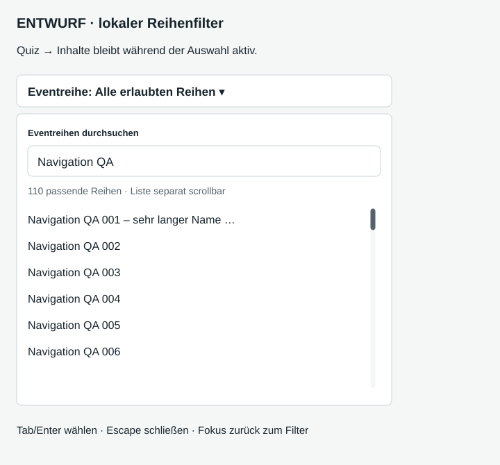
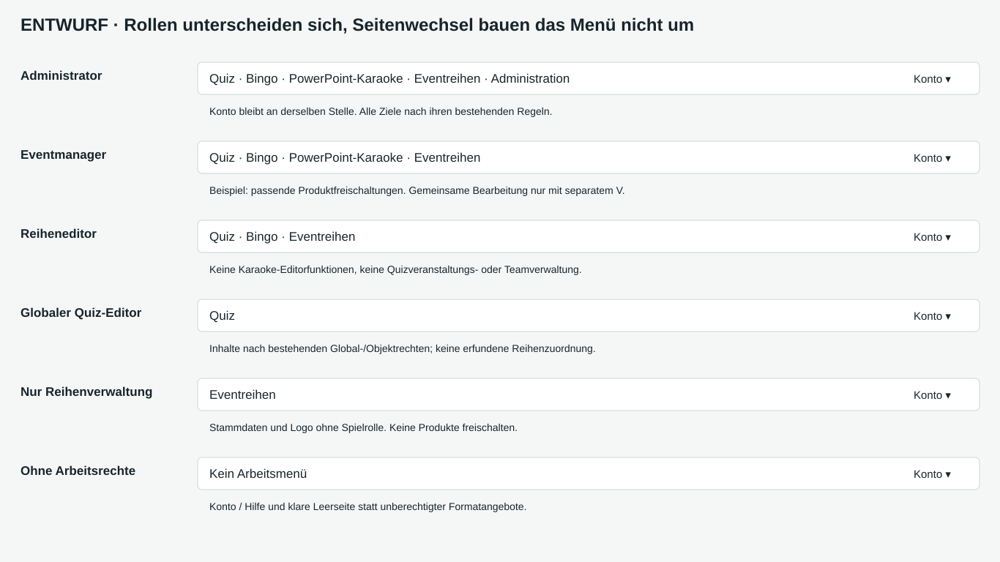

Stabile Navigation: Entscheidungsentwurf
26.10.2026 · Grundlage PR #131 / 62481160 · Analysebericht
Quizveranstaltungen und Bestandsquiz
Noch nicht spielbares Format
Reihensuche: 110 erlaubte Einträge
Der Filter gehört zur Sammlung. Keine Auswahl verändert die Hauptnavigation oder schreibt Objektzuordnungen. 110 ist eine synthetische Beispieldatenmenge, kein neues Limit.

Rollen: berechtigte Unterschiede

Mobiles Hauptmenü geöffnet, gleiche Ziele wie am Laptop
| Rolle | Hauptnavigation | Begrenzung |
|---|
| Admin | Quiz · Bingo · Karaoke · Eventreihen · Administration | Produkte nicht automatisch aktivieren |
| Eventmanager | Quiz / freigeschaltete Formate · Eventreihen | Nur erlaubte Reihen; gemeinsames Editieren nur mit V |
| Reiheneditor | Quiz · ggf. Bingo · Eventreihen | Kein Karaokeeditor, keine Quizverwaltung |
| Globaler Quiz-Editor | Quiz | Eigene globale Fragen nach Status; globale Stories lesbar |
| Nur Reihenverwaltung | Eventreihen | Keine Spielrolle erforderlich |
| Keine Rechte | Konto / Hilfe | Klare Leerseite, keine Arbeitsnavigation |
Eigene heuristische Prüfung, keine Nutzertests. Alle Einzelrechte werden aus bestehenden Policies übernommen. Das Mobil-Hauptmenü enthält dieselben berechtigten Ziele wie der Desktopkopf; „Quizbereich“ enthält die Quiz-Unterauswahl. Die SVGs sind Ansichten, keine bedienbaren Menüprototypen.